Data Link Connector: Testing and Inspection
DLC Circuit Troubleshooting
NOTE: Make sure the HDS and the DLC cable of the HDS is normal.
1. Turn the ignition switch OFF.
2. Connect the HDS to the DLC.
NOTE: Make sure the HDS is properly connected to the DLC.
3. Turn the ignition switch ON (II), and read the HDS.
Does the HDS identify the vehicle?
YES - Go to step 4.
NO - Go to step 23.
4. Check for Temporary DTCs or DTCs in the PGM-FI system with the HDS.
Are any Temporary DTCs or DTCs indicated?
YES - Go to the indicated DTC's troubleshooting. A L L Diagnostic Trouble Codes ( DTC )
NO - Go to step 5.
5. Turn the ignition switch OFF.
6. Turn the ignition switch ON (II), and watch the SRS indicator.
Does the SRS indicator stay on?
YES - Go to the SRS system's general troubleshooting information. Testing and Inspection
NO
- With ABS system: Go to step 7.
- With VSA system: Go to step 9.
7. Turn the ignition switch OFF.
8. Turn the ignition switch ON (II), and watch the ABS indicator.
Does the ABS indicator stay on?
YES - Go to the ABS system's general troubleshooting information. Testing and Inspection
NO - Go to step 11.
9. Turn the ignition switch OFF.
10. Turn the ignition switch ON (II), and watch the VSA indicator.
Does the VSA indicator stay on?
YES - Go to the VSA system's general troubleshooting information. Testing and Inspection
NO - Go to step 11.
11. Turn the ignition switch OFF.
12. Start the engine, and watch the EPS indicator.
Does the EPS indicator stay on?
YES - Go to the EPS system's general troubleshooting information. Testing and Inspection
NO - Go to step 13.
13. Turn the ignition switch OFF.
14. Turn the ignition switch ON (II), and watch the immobilizer indicator.
Does the immobilizer indicator stay on or flash?
YES - Go to the immobilizer system's troubleshooting. Testing and Inspection
NO - Go to step 15.
15. Do the gauge self-diagnostic function. Testing and Inspection
16. Check for B-CAN system DTCs without the HDS.
Are any B-CAN DTCs indicated?
YES - Go to the indicated DTC's troubleshooting.
NO - Go to step 17.
17. Turn the ignition switch OFF.
18. Disconnect the HDS from the DLC.
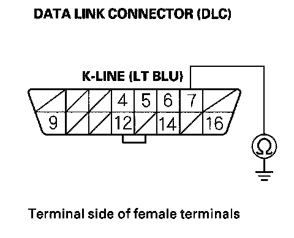
19. Check for continuity between DLC terminal No.7 and body ground.
Is there 5 ohms or less?
YES - Go to step 20.
NO - Go to step 21.
20. Continue to check for continuity between DLC terminal No.7 and body ground, while disconnecting these parts, one at a time:
- SRS unit connector A (28P)
- ABS modulator-control unit 25P connector (with ABS system)
- VSA modulator-control unit 37P connector (with VSA system)
- EPS control unit connector D (28P) (with electrical power steering)
- Immobilizer-keyless control unit 7P connector
- Audio unit 17P connector
- Under-dash fuse/relay box (ohm) (16P) connector
Does continuity go away when one of the above components is disconnected?
YES - Replace the part that caused an open when it was disconnected.
NO - Repair short in the wire between the DLC (K-line) and the ABS modulator-control unit (with ABS system), the VSA modulator-control unit (with VSA system), the SRS unit, the EPS control unit, the immobilizer-keyless control unit, the audio unit, or the under-dash fuse/relay box .
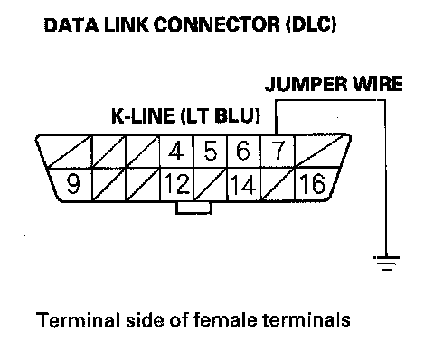
21. Connect DLC terminal No.7 to body ground with a jumper wire.
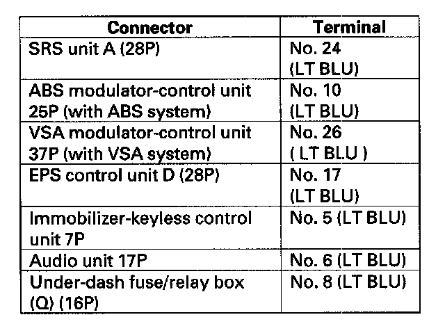
22. Check for continuity between body ground and these connector terminals:
Is there continuity between the DLC terminal and each of the terminals in the chart?
YES - Replace the unit which cannot communicate with the HDS.
NO - Repair open in the wire between the DLC (K-line) and the appropriate connector.
23. Do the gauge self-diagnostic function. Testing and Inspection
24. Check for B-CAN system DTCs without the HDS.
Is DTC B1168,B1169, and/or B1178 indicated?
YES - Go to step 37.
NO - Go to step 25.
25. Turn the ignition switch OFF.
26. Disconnect the HDS from the DLC.
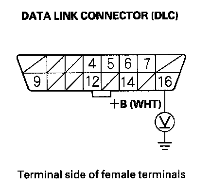
27. Measure voltage between DLC terminal No.16 and body ground.
Is there battery voltage?
YES - Go to step 28.
NO - Repair open in the wire between DLC terminal No.16 and the No.23 BACK UP (10 A) fuse in the under-hood fuse/relay box.
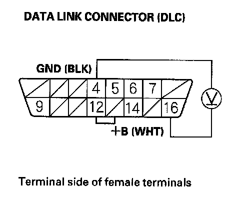
28. Measure voltage between DLC terminals No.4 and No.16.
Is there battery voltage?
YES - Go to step 29.
NO - Repair open in the wire between DLC terminal No.4 and body ground (G502).
29. Connect the HDS to the DLC.
30. Jump the SCS line with the HDS.
31. Disconnect ECM connector A (44P).
32. Disconnect the HDS from the DLC.
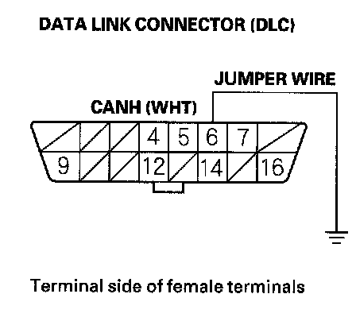
33. Connect DLC terminal No.6 to body ground with a jumper wire.
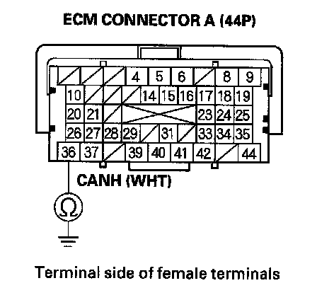
34. Check for continuity between ECM connector terminal A36 and body ground.
Is them continuity?
YES - Go to step 35.
NO - Repair open in the wire between the ECM (A36) and DLC terminal No.6.
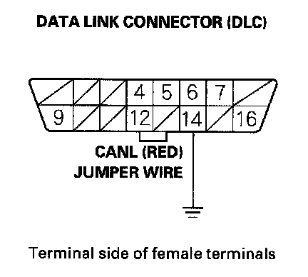
35. Connect DLC terminal No.14 to body ground with a jumper wire.
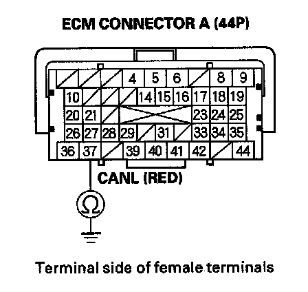
36. Check for continuity between ECM connector terminal A37 and body ground.
Is there continuity?
YES - Update the ECM if it does not have the latest software , or substitute a known-good ECM, then recheck. If the symptom/indication goes away with a known-good ECM, replace the original ECM.
NO - Repair open in the wire between the ECM (A37) and DLC terminal No.14.
37. Try to start the engine.
Does the engine start and idle smoothly?
YES - Go to F-CAN circuit troubleshooting. Testing and Inspection
NO - Go to step 38.
38. Turn the ignition switch OFF.
39. Check the No.2 IG MAIN (50 A) fuse in the underhood fuse/relay box.
Is the fuse OK?
YES - Repair open in the wire between the No.2 IG MAIN (50 A) fuse and the ignition switch. If the wire is OK, go to step 40.
NO - Repair short in the wire between the No.2 IG MAIN (50 A) fuse and the under-hood fuse/relay box. Also replace the No.2 IG MAIN (50 A) fuse.
40. Inspect the No.19 FI MAIN (15 A) fuse in the underhood fuse/relay box.
Is the fuse OK?
YES - Go to step 47.
NO - Go to step 41.
41. Remove the blown No.19 FI MAIN (15 A) fuse from the underhood fuse/relay box.
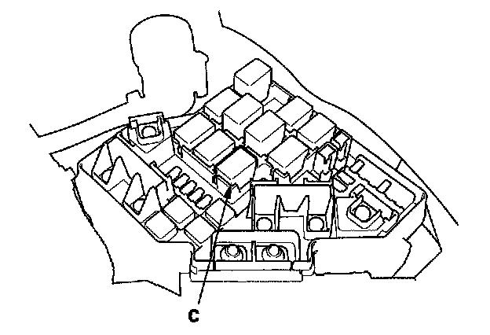
42. Remove PGM-FI main relay 1 (C) from the underhood fuse/relay box.
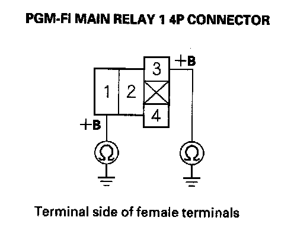
43. Check for continuity between body ground and PGM-FI main relay 1 4P connector terminals No.1 and No.3 individually.
Is there continuity?
YES - Replace the under-hood fuse/relay box. Also replace the No.19 FI MAIN (15 A) fuse.
NO - Go to step 44.
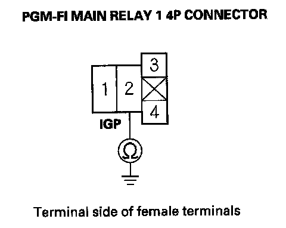
44. Disconnect each of the components or connectors these components, one at a time, and check for continuity between PGM-FI main relay 1 4P connector terminal No.2 and body ground.
- PGM-FI main relay 2 (FUEL PUMP)
- ECM connector A (44P)
- Each injector 2P connector
- Camshaft position (CMP) sensor B 3P connector
- Crankshaft position (CKP) sensor 3P connector
- Ignition coil relay
- Electronic throttle control system (ETCS) control relay
Does continuity go away when one of the above components is disconnected?
YES - Replace the component that made the short to body ground go away when disconnected, If the item is the ECM, update the ECM if it does not have the latest software, or substitute a known-good ECM, then recheck. If the symptom/indication goes away with a known-good ECM, replace the original ECM. Also replace the No.19 FI MAIN (15A) fuse .
NO - Go to step 45.
45. Disconnect the all connectors from these, components:
- PGM-FI main relay 2 (FUEL PUMP)
- ECM connector A (44P)
- Injectors
- Camshaft position (CMP) sensor B
- Crankshaft position (CKP) sensor
- Ignition coil relay
- Electronic throttle control system (ETCS) control relay
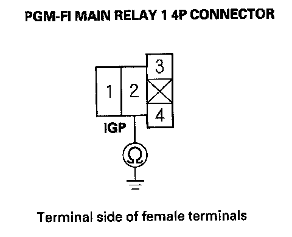
46. Check for continuity between PGM-FI main relay 1 4P connector terminal No.2 and body ground.
Is there continuity?
YES - Repair short in the wire between PGM-FI main relay 1 and each item. Also replace the No.19 FI MAIN (15 A) fuse.
NO - Replace PGM-FI main relay 1. Also replace the No.19 FI MAIN (15 A) fuse.
47. Inspect the No.2 FUEL PUMP (15 A) fuse in the under-dash fuse/relay box.
Is the fuse OK?
YES - Go to step 60.
NO - Go to step 48.
48. Remove the blown No.2 FUEL PUMP (15 A) fuse in the under-dash fuse/relay box.
49. Jump the SCS line with the HDS.
50. Disconnect ECM connector C (44P).
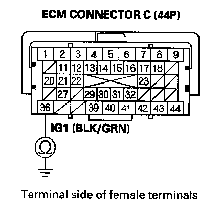
51. Check for continuity between ECM connector terminal C36 and body ground.
Is there continuity?
YES - Go to step 52.
NO - Replace the No.2 FUEL PUMP (15 A) fuse, and update the ECM if it does not have the latest software, or substitute a known-good ECM, then recheck. If the symptom/indication goes away with a known-good ECM, replace the original ECM.
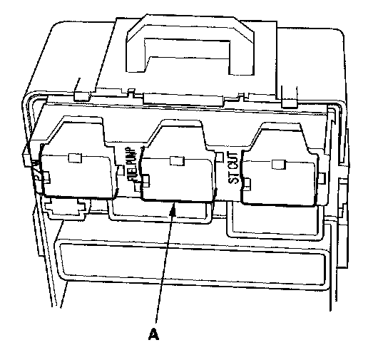
52. Remove PGM-FI main relay 2 (FUEL PUMP) (A) from the under-dash fuse/relay box.
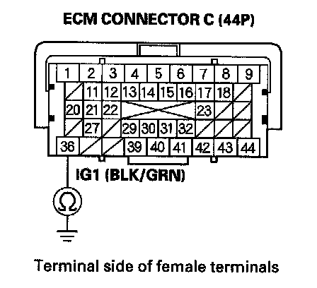
53. Check for continuity between ECM connector terminal C36 and body ground.
Is there continuity?
YES - Repair short in the wire between the NO.2 FUEL PUMP (15 A) fuse and the ECM (C36), between the No.2 FUEL PUMP (15 A) fuse and PGM-FI main relay 2 (FUEL PUMP), or between the No.2 FUEL PUMP (15 A) fuse and the immobilizer control unit. Also replace the No.2 FUEL PUMP (15 A) fuse.
NO - Go to step 54.
54. Remove the rear cushion seat.
55. Remove the rear floor upper cross-member, and the access panel from the floor.
56. Disconnect the fuel pump 4P connector.
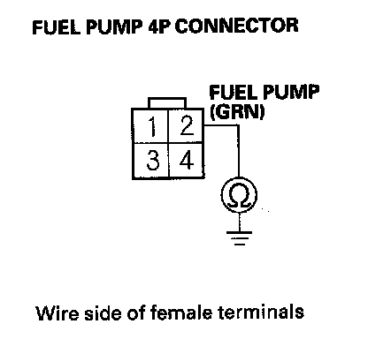
57. Check for continuity between fuel pump 4P connector terminal No.2 and body ground.
Is there continuity?
YES - Repair short in the wire between the fuel pump and PGM-FI main relay 2 (FUEL PUMP). Also replace the No.2 FUEL PUMP (15 A) fuse.
NO - Go to step 58.
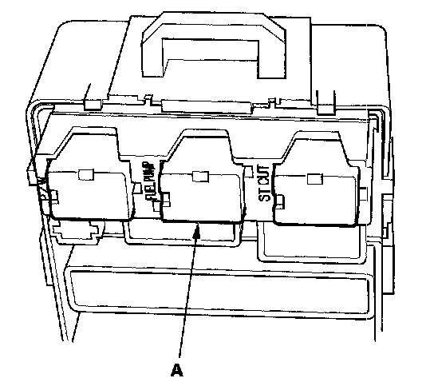
58. Reinstall PGM-FI main relay 2 (FUEL PUMP) (A).
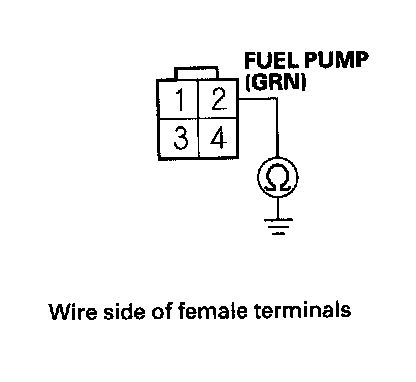
59. Check for continuity between fuel pump 4P connector terminal No.2 and body ground.
Is there continuity?
YES - Replace PGM-FI main relay 2 (FUEL PUMP). Also replace the No.2 FUEL PUMP (15 A) fuse.
NO - Check the fuel pump, and replace it if necessary. Also replace the No.2 FUEL PUMP (15 A) fuse.
60. Jump the SCS line with the HDS.
61. Disconnect ECM connectors A (44P) and C (44P).
62. Turn the ignition switch ON (II).
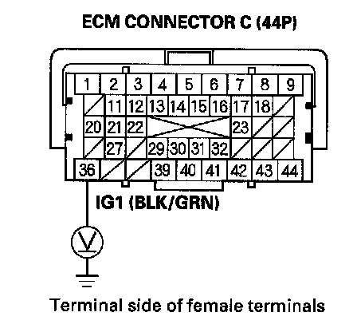
63. Measure voltage between ECM connector terminal C36 and body ground.
Is there battery voltage?
YES - Go to step 64.
NO - Repair open in the wire between the No.2 FUEL PUMP (15 A) fuse and the ECM (C36).
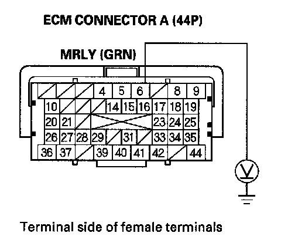
64. Measure voltage between ECM connector terminal A6 and body ground.
Is there battery voltage?
YES - Go to step 69.
NO - Go to step 65.
65. Turn the ignition switch OFF.
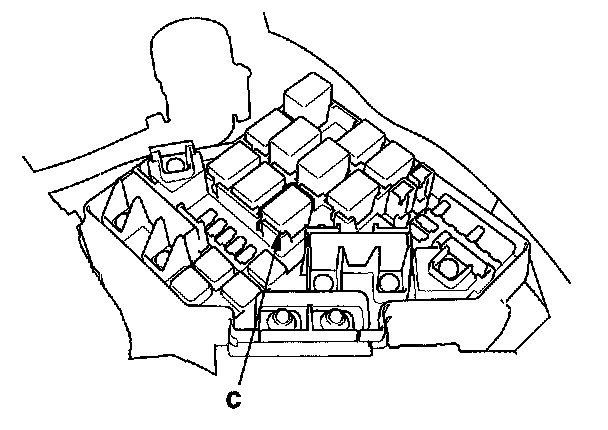
66. Remove PGM-FI main relay 1 (C) from the underhood fuse/relay box.
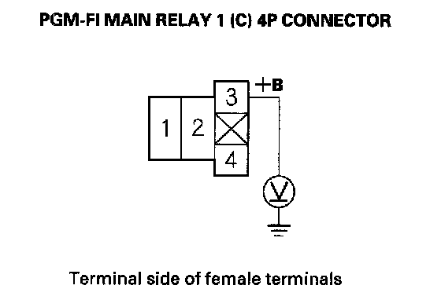
67. Measure voltage between PGM-FI main relay 1 4P connector terminal No.3 and body ground.
Is there battery voltage?
YES - Go to step 68.
NO - Replace the under-hood fuse/relay box.
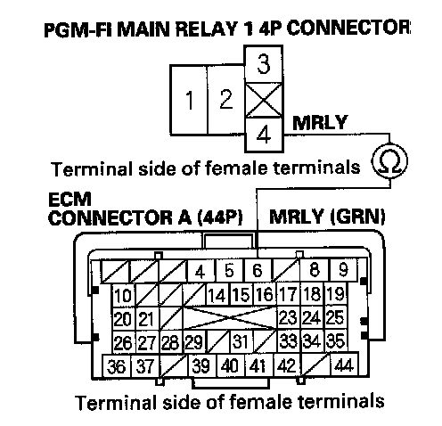
68. Check for continuity between PGM-FI main relay 1 4P connector terminal No.4 and ECM connector terminal A6.
Is there continuity?
YES - Test PGM-FI main relay 1. If the relay is OK, update the ECM if it does not have the latest software, or substitute a known-good ECM, then recheck. If the symptom/indication goes away with a known-good ECM, replace the original ECM.
NO - Repair open in the wire between the ECM (A6) and PGM-FI main relay 1.
69. Turn the ignition switch OFF.
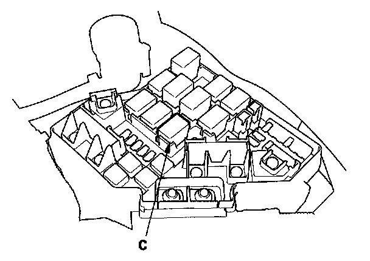
70. Remove PGM-FI main relay 1 (C) from the underhood fuse/relay box.
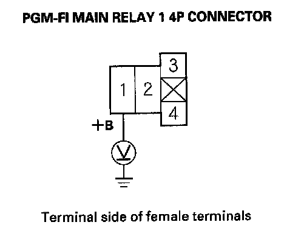
71. Measure voltage between PGM-FI main relay 1 4P connector terminal No.1 and body ground.
Is there battery voltage?
YES - Go to step 72.
NO - Replace the under-hood fuse/relay box.
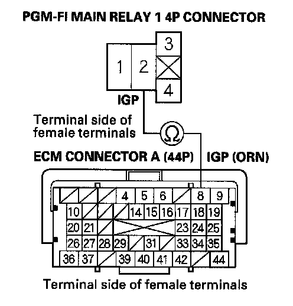
72. Check for continuity between PGM-FI main relay 1 4P connector terminal No.2 and ECM connector terminal A8.
Is there continuity?
YES - Go to step 73.
NO - Repair open in the wire between the ECM (A8) and PGM-FI main relay 1.
73. Test PGM-FI main relay 1.
Is PGM-FI main relay 1 OK?
YES - Go to step 74.
NO - Replace PGM-FI main relay 1.
74. Disconnect ECM connector B (44P).
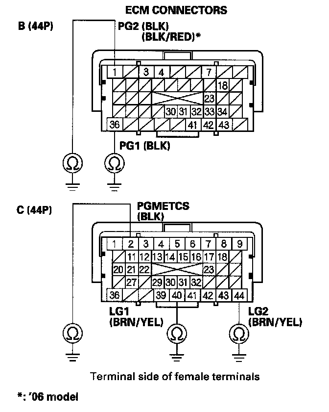
75. Check for continuity between body ground and ECM connector terminals B1, B36, C2, C40, and C44 individually.
Is there continuity?
YES - Go to step 76.
NO - Repair open in the wire between the ECM (B1, B36, C2, C40, C44) and G101.
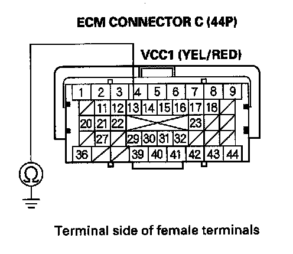
76. Check for continuity between ECM connector terminal C13 and body ground.
Is there continuity?
YES - Go to step 77.
NO - Go to step 78.
77. Continue to check for continuity between ECM connector terminal C13 and body ground, while disconnecting the MAP sensor 3P connector.
Is there continuity?
YES - Repair short in the wire between the ECM (C13) and the MAP sensor.
NO - Replace the MAP sensor.
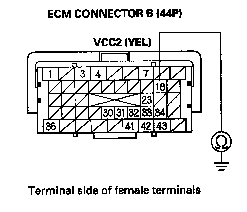
78. Check for continuity between ECM connector terminal B18 and body ground.
Is there continuity?
YES - Go to step 79.
NO - Go to step 80.
79. Continue to check for continuity between ECM connector terminal 818 and body ground, while disconnecting the output shaft (countershaft) speed sensor 3P connector.
Is there continuity?
YES - Repair short in the wire between the ECM (B18) and the output shaft (countershaft) speed sensor.
NO - Replace the output shaft (countershaft) speed sensor.
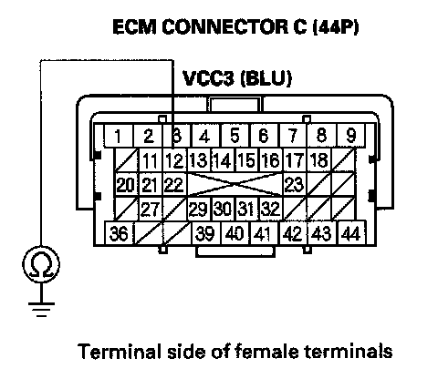
80. Check for continuity between ECM connector terminal C12 and body ground.
Is there continuity?
YES - Go to step 81.
NO - Go to step 82.
81. Continue to check for continuity between ECM connector terminal C12 and body ground, while disconnecting the throttle body 6P connector.
Is there continuity?
YES - Repair short in the wire between the ECM (C12) and the throttle body.
NO - Replace the throttle body.
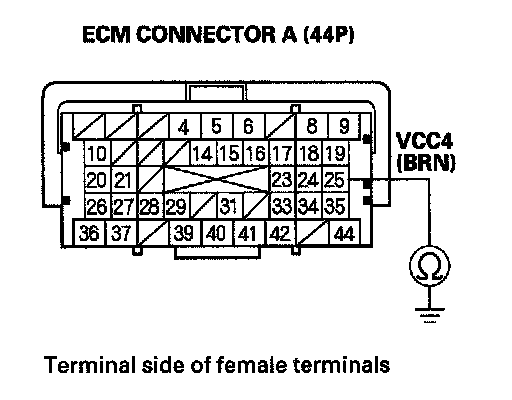
82. Check for continuity between ECM connector terminal A25 and body ground. ECM CONNECTOR A (44P)
Is there continuity?
YES - Go to step 83.
NO - Go to step 84.
83. Continue to check for continuity between ECM connector terminal A25 and body ground, while disconnecting the APP sensor 6P connector.
Is there continuity?
YES - Repair short in the wire between the ECM (A25) and APP sensor A.
NO - Replace the accelerator pedal module
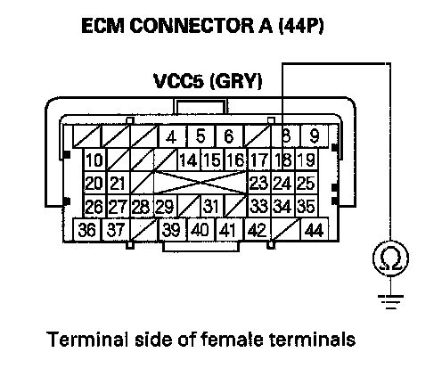
84. Check for continuity between ECM connector terminal A24 and body ground.
Is there continuity?
YES - Go to step 85.
NO - Go to step 86.
85. Continue to check for continuity between ECM connector terminal A24 and body ground, while disconnecting the APP sensor 6P connector.
Is there continuity?
YES - Repair short in the wire between the ECM (A24) and APP sensor B.
NO - Replace the accelerator pedal module.
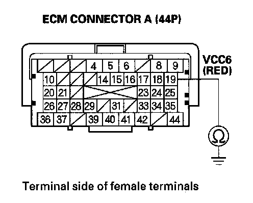
86. Check for continuity between ECM connector terminal A19 and body ground.
Is there continuity?
YES - Go to step 87.
NO - Update the ECM if it does not have the latest software, or substitute a known-good ECM, then recheck. If the symptom/indication goes away with a known-good ECM, replace the original ECM.
87. Continue to check for continuity between ECM connector terminal A19 and body ground, while disconnecting these parts, one at a time:
- A/C pressure sensor 3P connector
- FTP sensor 3P connector
Does continuity go away when one of the above components is disconnected?
YES - Replace the part that caused an open when it was disconnected.
NO - Repair short in the wire between the ECM (A19) and the A/C pressure sensor or the FTP sensor.